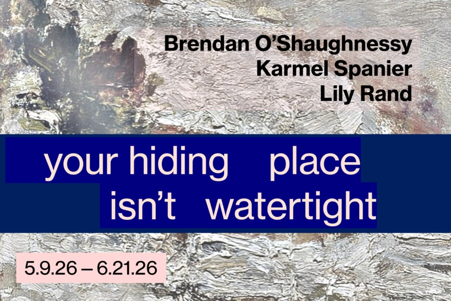

your hiding place isn’t water-tight
LVL3 presents your hiding place isn’t watertight…, a three person group show featuring Brendan O’Shaughnessy (Chicago, IL), Karmel Spanier (New York, NY), and Lily Rand (New York, NY). The opening reception for your hiding place isn’t watertight… will be on Saturday, May 9th, 2026 from 6-9 PM. your hiding place isn’t watertight… explores the moment when one subjectivity colors another and shows us what we may see through each other’s eyes, if we allow ourselves to be changed, to feel ambivalent, to reach for connection. O’Shaughnessy’s sculptures elicit attraction and aversion, as well as curiosity, kinship, and otherness, inviting us to search for a deeper understanding of ourselves and what we may become. Spanier recreates and relives incarnations of femininity through chronicling the female form. Rand’s watercolours constitute an endless meditation during which truth is strung together and continuously unraveled. By challenging what we consider to be beautiful, perverse, sensuous, and refuse, the works of O’Shaughnessy, Spanier, and Rand carry us beyond mere sensation or identification, and towards the shifting shorelines where you end and I begin—into the other-space of becoming.
The show is on view from May 9th to June 21st, 2026.